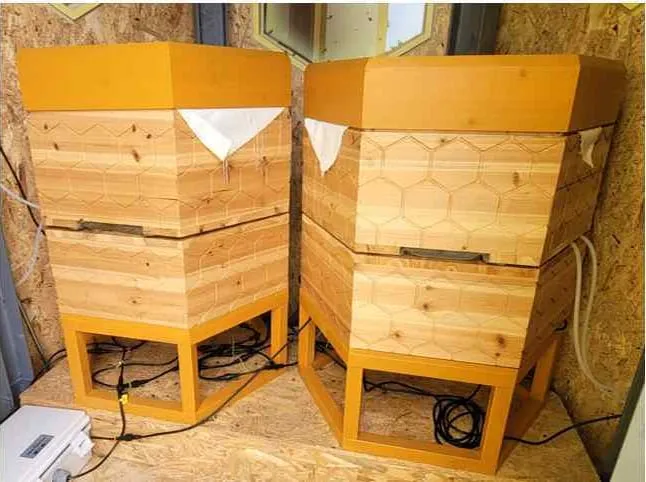
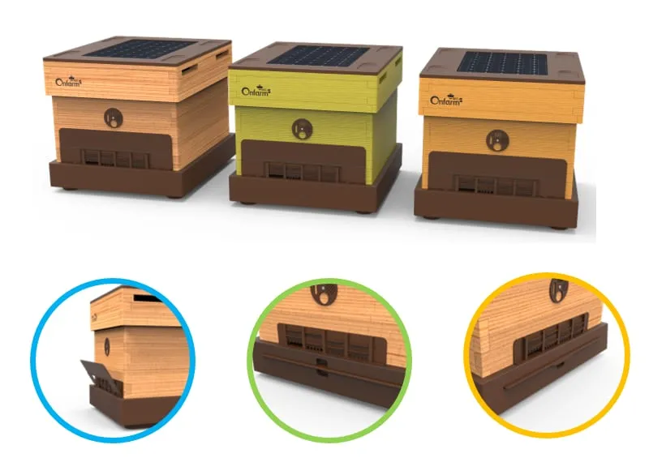

한화 ‘솔라 비하이브’에서 태양광 스마트 벌통까지
2022년 세계 꿀벌의 날 공개된 태양광 벌집, 비온팜은 자사가 개발한 시스템으로 소개

한화그룹이 2022년 5월 20일 ‘UN 세계 꿀벌의 날’에 태양광 전력으로 꿀벌의 생육환경을 유지하는 벌집 ‘솔라 비하이브(Solar Beehive)’를 공개했다. 스마트 양봉 기업 온팜(브랜드 비온팜)은 2025년 소개서에 이 벌집을 “비온팜이 개발한 2022년 한화그룹의 탄소중립 양봉 시스템”이라고 적었다.
비온팜 홈페이지에 옮겨 실린 한화그룹 발표는 솔라 비하이브를 태양광 전력을 활용한 탄소저감 벌집으로 소개했다. 한화그룹은 이 벌집을 “국내 최초로 공개했다”고 밝혔다. 꿀벌 개체 수를 늘리고 생물다양성 보존과 기후변화 대응의 중요성을 알리기 위해서라고 설명했다.
태양광 패널 얹은 육각형 벌집
세계일보는 2023년 5월 19일 보도에서 솔라 비하이브가 꿀벌 생육에 최적화된 환경을 제공하고 활동 데이터를 수집해 개체 수 보존 연구에도 기여하고 있다고 전했다.
비온팜 소개서에 실린 사진 속 구조물 2기는 육각형 무늬를 입힌 기둥 모양이고 꼭대기에 태양광 패널이 얹혀 있다. 함께 실린 다른 사진에는 나무판 벽으로 둘러싸인 공간에 육각형 나무 벌통 2통이 놓여 있고 받침대 아래로 전선이 지나간다. 소개서는 솔라 비하이브에 어떤 장치가 들어갔는지는 설명하지 않는다.

사진: 비온팜이 2025년 소개서에 ‘솔라 비하이브’ 사진과 함께 실은 육각형 나무 벌통 (자료: 비온팜)비온팜의 개발 기록
비온팜은 2025년 소개서의 개발 경과표 2022년 5월 항목에 ‘솔라 비하이브’ 디지털 양봉 시스템 개발을 올렸다. 함께 적힌 곳은 한화그룹과 이노션이다. 비온팜 홈페이지에 옮겨 실린 한화그룹 발표와 세계일보 기사 대목에는 비온팜이나 이노션의 이름이 나오지 않는다.
전기 없는 양봉장을 위한 벌통
비온팜 홈페이지 Q&A 게시판에는 2023년 12월 11일 “비온팜은 전기나 와이파이가 없어도 설치가 가능한가요?”라는 질문이 올라왔다. 비온팜은 답변에서 자사가 설치한 고정형 스마트 벌통은 전기가 필요하다고 밝혔다. 이어 “하지만 이동 양봉과 전력 공급이 어려운 양봉장을 위해 태양광 패널이 부착된 스마트 벌통을 개발 및 제작하고 있습니다”라고 했다. 이동 양봉은 꽃 피는 시기와 곳을 따라 벌통을 옮겨 다니는 양봉이다. 이 답변을 포함한 Q&A 5건은 비 와도 괜찮나, 꿀 늘어나나…스마트 벌통 질문 5가지 기사에 정리돼 있다.
비온팜 홈페이지 제품 소개에는 지붕에 패널을 얹은 ‘스마트하이브’ 디자인도 실려 있다. 비온팜은 스마트하이브를 두고 “측정된 데이터를 기반으로 벌통의 상태를 자체적으로 관리합니다”라고 소개했다. 기능 요소로는 착륙 판(벌이 내려앉는 판), 다용도 박스, 전면 원형 소문(벌통 출입구), ‘태양열 패널’, ‘보온 판넬’(그림 속 표기)을, 친환경 요소로는 삼나무 소재와 최소한의 EPP(발포 폴리프로필렌)를 꼽았다. 홈페이지는 스마트하이브의 출시 여부나 시기를 언급하지 않는다.

그래픽: 비온팜 홈페이지 제품 소개에 실린 스마트하이브 디자인 렌더링 (자료: 비온팜)자료: 비온팜 홈페이지(2026년 10월 8일 확인), 비온팜 2025 소개서, 한화그룹(2022년 5월 19일) 발표(비온팜 홈페이지 2023년 12월 5일 게시), 세계일보(2023년 5월 19일)
저작권자 © 윙윙통신 무단 전재 및 재배포 금지